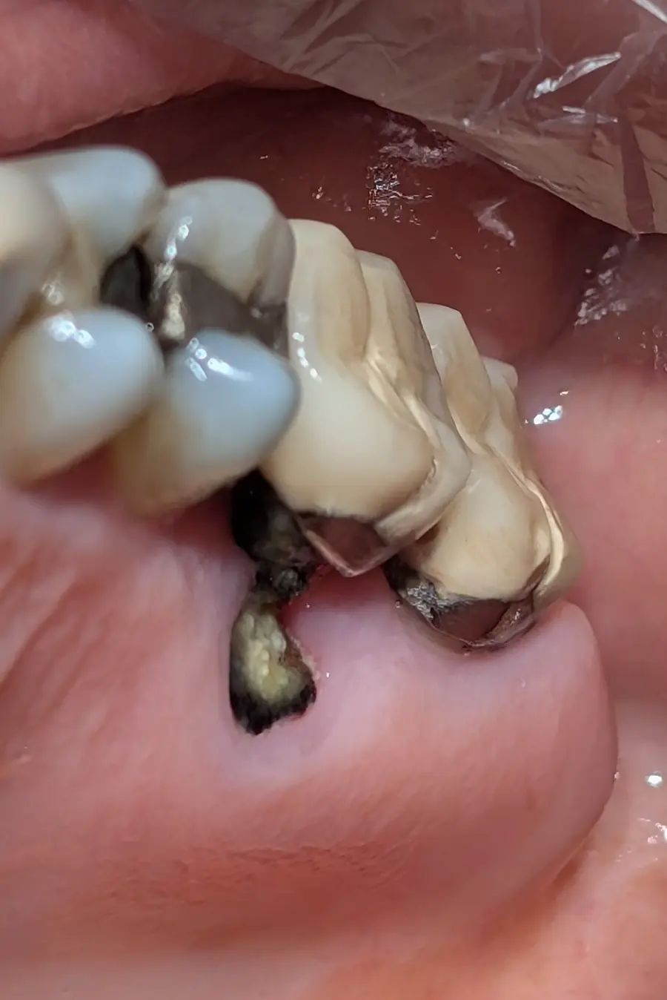

نسخه استخراجشده؛ ترجمه یا تأیید علمی انجام نشده است. وضعیت: captured
در ناحیهای خلفی، دندانی کراوندار میبینی و در سمت پالاتال آن، ریشهای تیره و پوسیده که بیرون از محدودهی روکش است. ظاهرش شبیه ریشهی پالاتال است، ولی جدا از روکش. رادیوگرافی در دست نیست. این ساختار چیست؟

وسوسهی اول ساختن سریع یک روایت است: درمانگر اولیه محدودهی دندان را اشتباه تشخیص داده، مارجین کراون را غلط تعیین کرده و بهمرور پوسیدگی ناحیهی فورکا را خورده تا آن ریشه جدا شده و حرکت کرده است. این روایت با خودش سازگار است و با آسیبپذیری شناختهشدهی فورکای مولرهای بالا در برابر پوسیدگی سابمارجینال هم میخواند.
همینجا مکث کن. «حرکت ریشه» یک ادعای مکانیکی است، نه یک مشاهده. ریشهای که حمایت پریودنتالش را از دست داده میتواند طی هفتهها تا ماهها جابهجا شود، ولی این فقط وقتی ثابت میشود که موقعیت فعلی ریشه را با جای آناتومیک خودش مقایسه کنیم. بدون آن مقایسه، نمیتوان با اطمینان گفت ریشه واقعاً حرکت کرده است.
شاید این ساختار اصلاً جزو دندان کراوندار نبوده باشد. یک دندان اضافه (supernumerary) در ناحیهی خلفی، خارج از قوس، بینقش در اکلوژن و دور از دسترس بهداشت، میتواند سالها دستنخورده بماند تا بالاخره بپوسد. در این صورت درمانگر اولیه شاید اصلاً مارجین را غلط نزده باشد؛ شاید از همان ابتدا با دو دندان مجزا روبهرو بوده و کراون را درست روی دندان اصلی نشانده است.
این دو روایت را با دادهی موجود نمیتوان از هم تفکیک کرد، اما یک معیار رادیوگرافیک واحد هر دو را همزمان تست میکند: شمارش و استقلال ریشهها در PA یا CBCT.
تمایل اولیه در این کیس به سمت مارجین اشتباه بود، ولی تمایل، تشخیص نیست. بدون رادیوگرافی، هر روایتی که انتخاب شود یک حدس آراسته است، نه یک قضاوت مستند. مهارتی که کمتر دربارهاش حرف میزنیم: نگهداشتن دو احتمال بهصورت همزمان، تا وقتی دادهی لازم برای حذف یکیشان فراهم شود. گاهی ارزش یک کیس در صداقت دربارهی چیزی است که هنوز نمیدانیم.